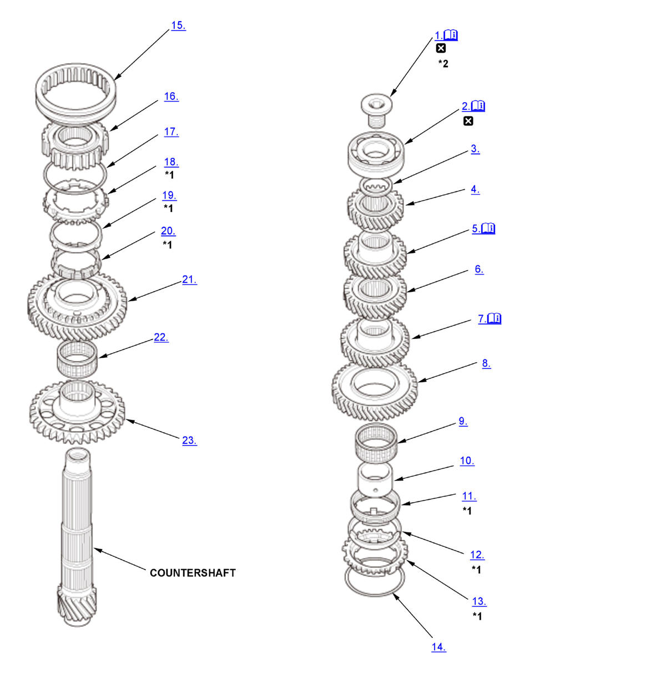

Countershaft Disassembly, Reassembly, and Inspection (K20C1 (M/T)) (2017 2018 2019 2020 2021): Disassembly: Procedure
WARNING: This page is about a different variant/trim than selected.
NOTE:
Numbered call-outs in figure pertain to list numbers in following procedure.

Courtesy of HONDA, U.S.A., INC. |
Detailed information, notes, and precautions |
 |
Replace |
| *1 | Triple cone synchro assembly |
| *2 | Left-hand threads |
- Special Bolt - Remove
1. Securely clamp the countershaft assembly in a bench vise with wood blocks (A). 2. Remove the special bolt (B).
- Ball Bearing - Remove
1. Support 6th gear (A) on steel blocks, and press the countershaft (B) out of the ball bearing and 6th gear using an attachment (C) and a press (D).
NOTE: Do not use a jaw-type puller; it can damage the gear teeth. - 35 mm Shim - Remove
- 6th Gear - Remove
- 5th Gear - Remove
1. Support 4th gear (A) on steel blocks, and press the countershaft (B) out of 5th gear and 4th gear using an attachment (C) and a press (D).
NOTE: Do not use a jaw-type puller; it can damage the gear teeth. - 4th Gear - Remove
- 3rd Gear - Remove
1. Support 2nd gear (A) on steel blocks, and press the countershaft (B) out of 3rd gear and 2nd gear using an attachment (C) and a press (D).
NOTE: Do not use a jaw-type puller; it can damage the gear teeth. - 2nd Gear - Remove
- Needle Bearing - Remove
- 2nd Gear Distance Collar - Remove
- Inner Ring - Remove
- Synchro Cone - Remove
- Synchro Ring - Remove
- Synchro Spring - Remove
- 1st/2nd Synchro Sleeve - Remove
- 1st/2nd Synchro Hub - Remove
- Synchro Spring - Remove
- Synchro Ring - Remove
- Synchro Cone - Remove
- Inner Ring - Remove
- 1st Gear - Remove
- Needle Bearing - Remove
- Counter Shaft Reverse Gear - Remove